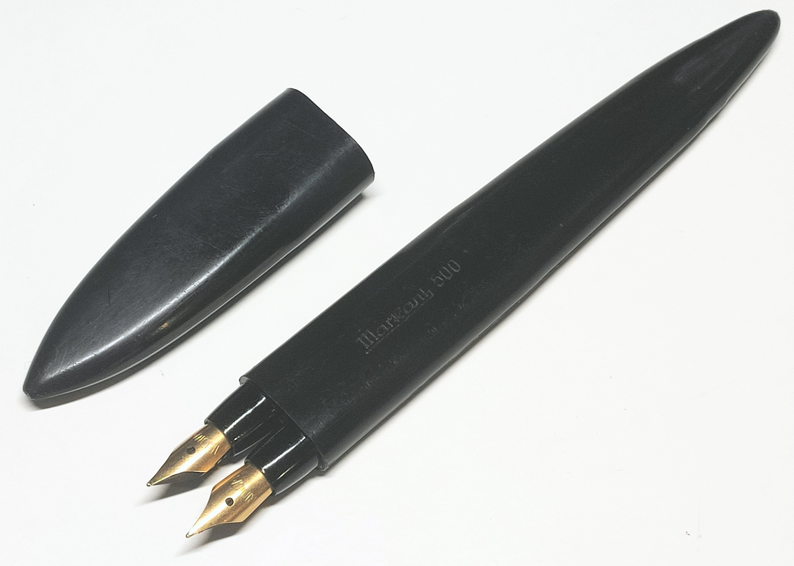

Mehrfarbfüller
Mehrfarbige Füllfederhalter
Stand: 16.02.2026
Es gibt nicht nur Mehrfarbstifte, die mit Graphitminen, Buntstiftminen oder Kugelschreiberminen schreiben. Auch Füllfederhalter mit mehr als einer Schreibfarbe existieren - zumindest in den Köpfen von Erfindern, denn die meisten wurden wohl nie hergestellt.
Ich habe einige Patente chronologisch und nach Federzahl geordnet. Doch es sind bei weitem nicht alle! Vor allem im Ausland gibt es noch Hunderte Patente zu entdecken.
Nicht alle entsprechen meiner Definition des mechanischen Mehrfarbstifts, dennoch sind sie erwähnenswert aufgrund der Eigenheit von Füllfederhaltersystemen:
Es ist möglich, eine Schreibfeder aufzuteilen und jedem Teil eine andere Tinte zuzuführen.
Oder einer ungeteilten Schreibfeder Tinte aus einem mehrerer auswählbarer Tintenreservoirs zuzuspeisen.
Andere wiederum haben schlicht mehrere ungeteilte Schreibfedern für je einen eigenen Tintenbehälter, wobei sie sich darin unterscheiden, ob Federn z. B. manuell nach vorne gebracht werden können, oder permanent in Schreibstellung sind.
Hergestellte mehrfarbige Füllfederhalter
1930Zerollo Duo Colori
Zweifarbfüller
1934Quadretti Colorado
Zweifarbfüller
1938Itala Cromograf
Zweifarbfüller
~1970s Markant 500
Zweifarbfüller 2015 Montegrappa Q1
Vierfarbfüller